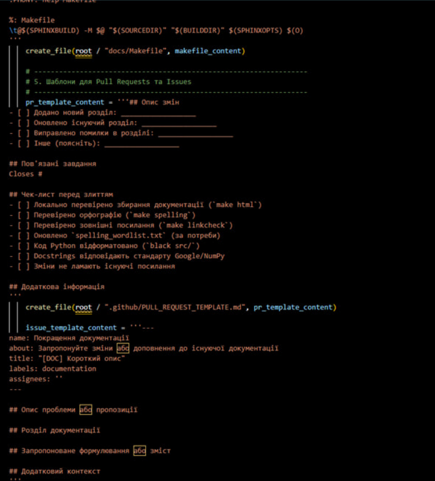
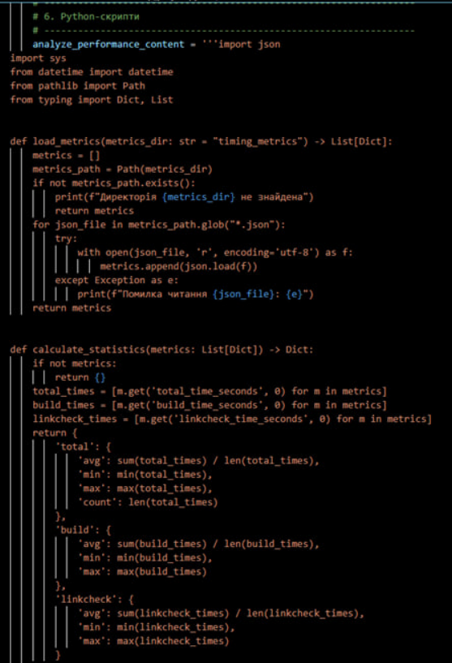
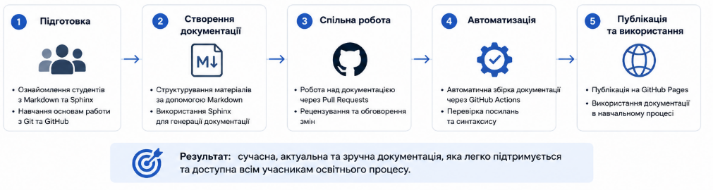

Розділ 4
ТЕСТУВАННЯ ТА ОЦІНКА ЕФЕКТИВНОСТІ
4.1. Аналіз швидкості публікації змін
Оцінка ефективності реалізованої системи автоматизації проводилась шляхом аналізу часу проходження повного циклу — від внесення змін у репозиторій до появи оновленої документації на сайті. Швидкість публікації є важливим показником ефективності CI/CD-процесу, оскільки впливає на швидкість отримання зворотного зв’язку та загальну зручність роботи з документацією. Під час тестування було виконано серію запусків workflow у GitHub Actions для проєктів різного обсягу. Результати показали стабільний час збирання незалежно від локальної конфігурації комп’ютера користувача завдяки використанню хмарних runner-серверів. У дослідженнях Романа Петренка 59 зазначається, що скорочення часу виконання CI/CD-процесів позитивно впливає на якість кінцевого програмного продукту.
Першим етапом було проаналізовано час створення віртуального середовища Python та встановлення залежностей. Під час початкового запуску workflow встановлення пакетів Sphinx і необхідних розширень займає найбільше часу. Для оптимізації цього процесу у GitHub Actions було реалізовано кешування залежностей, що дозволило суттєво скоротити тривалість повторних запусків workflow. Такий підхід підтверджує ефективність використання механізмів кешування у CI/CD-системах, що також відзначається у роботах Віктора Морозова 60.
Процес збирання документації за допомогою Sphinx продемонстрував стабільну швидкість навіть при збільшенні кількості Markdown-файлів та використанні автоматичної генерації API-документації через autodoc. Для навчальних проєктів середнього обсягу генерація HTML-документації займає кілька секунд, а загальний час workflow залишається комфортним для постійної роботи. Як зазначає Андрій Вовк у роботах щодо ефективності систем документування 61, Sphinx забезпечує високу продуктивність при роботі з великими обсягами технічної документації.
Окремо було оцінено вплив додаткових перевірок, зокрема linkcheck та linting, на загальну тривалість workflow. Найбільш ресурсомістким етапом є перевірка зовнішніх посилань, оскільки її швидкість залежить від часу відповіді сторонніх серверів. Додавання linkcheck збільшує час виконання workflow, проте дозволяє автоматично виявляти неактуальні або недоступні посилання ще до публікації документації. У дослідженні Тетяни Ковальчук 62 підкреслюється, що якість перевірки контенту є важливішою за незначне збільшення часу виконання CI-процесу.
Етап автоматичного деплою документації на GitHub Pages виконується після успішного завершення всіх перевірок та збирання HTML-версії сайту. Публікація артефактів займає незначний проміжок часу, після чого оновлена документація стає доступною через вебінтерфейс. У середньому повний цикл від git push до оновлення сайту займає декілька хвилин, що забезпечує швидкий цикл внесення та перевірки змін. Подібний підхід значно ефективніший за ручне оновлення документації через FTP або локальне копіювання файлів. Ефективність хмарного деплою також відзначається у матеріалах Олександра Резніка 63.
Аналіз workflow показав, що GitHub Actions дозволяє паралельно виконувати декілька завдань, зокрема перевірки для різних версій Python. Це забезпечує масштабованість системи та дозволяє використовувати єдиний CI/CD-конвеєр для різних конфігурацій середовища. Такий підхід особливо корисний у командній розробці та навчальних проєктах із великою кількістю учасників.
{kind=link}

Рис.4.1-Аналіз швидкості публікації змін
Під час тестування також було проаналізовано вплив додаткових компонентів, зокрема Graphviz-діаграм, на швидкість збирання документації. Використання великої кількості графічних елементів збільшує навантаження на runner, проте не призводить до критичного зростання часу виконання workflow. Для оптимізації рекомендовано використовувати векторні формати та мінімізувати складність діаграм.
Порівняння автоматизованого підходу з традиційною ручною підготовкою документації показало суттєве скорочення часових витрат. Автоматичне формування структури документації, змісту, перевірки посилань та публікації дозволяє уникнути значної кількості рутинних операцій. Завдяки цьому основна увага може бути зосереджена на змісті документації та розробці програмного забезпечення.
Під час тривалого тестування система продемонструвала стабільність роботи та передбачуваний час виконання workflow. Відхилення тривалості збирання були незначними навіть при підвищеному навантаженні на мережу або GitHub-сервіси. Це підтверджує надійність використання GitHub Actions та GitHub Pages для автоматизації процесу публікації документації.
Швидкий цикл оновлення документації позитивно впливає на процес редагування та внесення виправлень. Автор може оперативно переглядати результати змін після публікації, що спрощує тестування структури документації, навігації та коректності Markdown-розмітки. Це робить процес підтримки документації більш динамічним та наближеним до сучасних практик розробки програмного забезпечення.
Додатковою перевагою Sphinx є автоматична генерація пошукового індексу, який забезпечує швидкий пошук інформації на готовому сайті документації. Хоча створення індексу збільшує час збирання, це значно покращує зручність роботи користувачів із документацією.
За результатами тестування встановлено, що реалізована система повністю відповідає вимогам щодо швидкості та стабільності публікації змін. Поєднання локальної розробки через sphinx-autobuild та автоматичного деплою через GitHub Actions дозволило реалізувати ефективний CI/CD-процес для підготовки та публікації технічної документації.
Підсумовуючи результати аналізу, можна зробити висновок, що використання Sphinx, MyST Parser та GitHub Actions забезпечує високу швидкість оновлення документації та значно спрощує процес її підтримки. Реалізований підхід відповідає концепції Documentation as Code та може ефективно використовуватись у навчальних і командних програмних проєктах.
4.2. Оцінка зручності спільної роботи студентів над документацією через Pull Requests
Оцінка зручності спільної роботи проводилась на основі аналізу використання Pull Requests у процесі підготовки документації. У традиційних методах редагування текстових документів часто виникають проблеми з конфліктами версій та відстеженням внеску окремих учасників. Використання Git та GitHub дозволяє організувати процес роботи над документацією через систему гілок і Pull Requests, де кожна зміна проходить етап перевірки та рецензування. Такий підхід забезпечує прозорість змін і спрощує взаємодію між учасниками проєкту. У дослідженнях Олега Ляшенка 65 зазначається, що Pull Requests підвищують відповідальність учасників за якість спільного продукту.
Однією з основних переваг Pull Requests є можливість перегляду diff-змін, де додані та видалені фрагменти тексту автоматично підсвічуються в інтерфейсі GitHub. Це дозволяє швидко оцінювати внесені зміни без необхідності повторного перегляду всієї документації. Для навчальних проєктів такий механізм спрощує перевірку робіт і дозволяє аналізувати розвиток документації між ітераціями. Коментарі до окремих рядків Markdown-файлів забезпечують зручний формат технічного обговорення та виправлення помилок. У посібнику Наталії Козак 66 контекстні коментарі визначаються як ефективний інструмент навчання технічному письму.
Інтеграція GitHub Actions у процес рецензування дозволяє автоматично відображати статус збирання документації безпосередньо у Pull Request. Учасники команди можуть бачити результати linting, перевірки посилань та успішність збирання Sphinx ще до ручного перегляду змін. Якщо workflow завершується з помилкою, Pull Request позначається як такий, що потребує виправлення. Це зменшує навантаження на рецензентів і дозволяє зосередитись на змістовній частині документації. Дослідження Ігоря Доценка 67 підтверджує, що автоматизовані CI-перевірки пришвидшують процес командної взаємодії.
Додатковою перевагою є можливість попереднього перегляду документації перед злиттям змін в основну гілку. Це дозволяє перевіряти коректність відображення Markdown-розмітки, діаграм та навігації без ризику пошкодження основної версії документації. У роботі Майкла Стівенса 18 підкреслюється, що середовища preview є важливим компонентом підходу Documentation as Code.
Механізм гілкування Git дозволяє декільком студентам одночасно працювати над різними частинами документації. Кожен учасник може вносити зміни у власній гілці, а інтеграція виконується через Pull Requests після завершення перевірок. Це усуває проблему перезапису файлів, характерну для традиційних текстових редакторів. Крім того, система контролю версій дозволяє швидко відновлювати попередні стани проєкту у разі помилок. Як зазначає Лінус Торвальдс 68, прозора історія змін є ключовою перевагою сучасних систем контролю версій.
Під час тестування також було проаналізовано процес вирішення конфліктів злиття. Хоча для початківців цей процес може бути складним, GitHub надає інструменти для порівняння та вибору необхідних змін безпосередньо через вебінтерфейс. Робота з конфліктами формує навички командної взаємодії та розуміння структури спільного проєкту.
Оскільки документація у проєкті реалізована через Markdown і MyST Parser, GitHub автоматично відображає форматований текст без необхідності локального збирання документації. Це спрощує перевірку змін та дозволяє швидко вносити незначні виправлення навіть через браузер або мобільний застосунок GitHub.
Для організації процесу рецензування можуть використовуватись шаблони Pull Requests із чек-листами перевірки. Учасники вказують, які розділи були змінені, чи проходила документація локальне тестування та чи виконані вимоги до оформлення. Такий підхід спрощує аналіз змін і стандартизує процес роботи з документацією. У роботах Сари Уеллс 22 стандартизація процесів рецензування визначається як важливий фактор стабільної якості документації.
{kind=link}

Рис.4.2-Оцінка зручності спільної роботи студентів над документацією через Pull Requests
Аналіз історії обговорень у Pull Requests показав, що колективна перевірка позитивно впливає на якість документації. Учасники команди виявляють стилістичні помилки, некоректні посилання та проблеми структури, які могли бути пропущені автором. Для викладача історія коментарів і комітів також є джерелом інформації про активність кожного студента та його внесок у проєкт.
Використання Pull Requests спрощує інтеграцію нових учасників у проєкт, оскільки історія змін і коментарів дозволяє швидко зрозуміти структуру документації та прийняті рішення. Документація у такому форматі стає не лише технічним описом, а й журналом розвитку проєкту.
Під час тестування було встановлено, що поєднання Pull Requests та автоматичних перевірок GitHub Actions створює безпечне середовище для внесення змін. Студенти можуть експериментувати зі структурою документації або новими можливостями Sphinx без ризику втрати стабільності основної версії проєкту, оскільки всі зміни проходять автоматичну перевірку перед злиттям.
За результатами аналізу встановлено, що використання GitHub, Pull Requests та GitHub Actions значно підвищує зручність спільної роботи над документацією. Автоматизація перевірок, контроль версій і механізм рецензування забезпечують стабільність документації та спрощують організацію командної роботи. Реалізований підхід відповідає принципам Documentation as Code та може ефективно використовуватись у навчальних і командних програмних проєктах.
4.3. Рекомендації щодо впровадження системи в освітній процес
Успішне впровадження автоматизованої системи підготовки документації у навчальному процесі потребує поєднання технічної інфраструктури та адаптації методичних підходів. Однією з основних рекомендацій є ознайомлення студентів із Git, GitHub та Sphinx уже на початкових етапах навчання. Це дозволяє формувати навички Documentation as Code під час виконання лабораторних, курсових та командних проєктів. У дослідженнях Володимира Бикова 71 зазначається, що раннє використання сучасних цифрових інструментів позитивно впливає на мотивацію та якість підготовки студентів.
Для спрощення початку роботи доцільно використовувати готовий шаблон репозиторію з попередньо налаштованими конфігураціями Sphinx, MyST Parser та GitHub Actions. Наявність базової структури проєкту дозволяє студентам зосередитись на змісті документації, а не на технічному налаштуванні середовища. У подальшому конфігурація може розширюватися залежно від складності проєкту та потреб навчального курсу. Подібний підхід рекомендується у роботах Ірини Войтюк 72, де наголошується на важливості використання стандартизованих шаблонів у цифровому навчальному середовищі.
Важливим елементом впровадження є оновлення критеріїв оцінювання студентських робіт. Доцільно враховувати не лише зміст документації, а й коректність роботи CI/CD-конвеєра, успішність автоматичного збирання та відсутність помилок у workflow. Історія комітів, Pull Requests та результати перевірок GitHub Actions дозволяють викладачу аналізувати реальний процес виконання роботи та контролювати академічну доброчесність. Сергій Квіт у працях щодо академічної етики 73 підкреслює важливість прозорості процесу створення навчальних матеріалів.
Для ефективного використання системи необхідно організовувати практичні заняття та воркшопи для викладачів. Використання внутрішньої документації кафедри, реалізованої через Sphinx і GitHub, дозволяє демонструвати можливості системи на реальних прикладах. Колективне редагування матеріалів через Pull Requests сприяє підтримці актуальності навчального контенту. У дослідженні Олени Колесник 75 зазначається, що рівень цифрової компетентності викладачів безпосередньо впливає на успішність впровадження нових освітніх технологій.
{kind=link}

Рис.4.3-Рекомендації щодо впровадження системи в освітній процес
Для масштабного використання системи в університеті доцільно застосовувати можливості GitHub Education, які забезпечують розширені ресурси для навчальних проєктів та централізоване управління доступом студентів. Це спрощує організацію командної роботи та підтримку навчальної інфраструктури. Рекомендації щодо використання хмарних платформ в освіті також розглядаються у роботах Андрія Співаковського 75.
Методична підтримка впровадження може включати створення коротких інструкцій, відеоматеріалів та прикладів готових проєктів. Використання документації, згенерованої безпосередньо через Sphinx, дозволяє одночасно навчати роботі з системою та демонструвати її можливості. Наявність прикладів із відкритою історією розробки допомагає студентам вивчати практики командної роботи та структурування документації.
Впровадження системи також відкриває можливість інтеграції з іншими освітніми сервісами через API GitHub. Це дозволяє автоматизувати окремі етапи навчального процесу, зокрема перевірку завдань, контроль змін і зберігання результатів роботи студентів. Такий підхід формує єдине цифрове середовище для підготовки технічної документації та програмних проєктів.
Під час переходу до нової методології важливо поступово збільшувати рівень складності завдань. На початкових етапах достатньо використовувати базову Markdown-розмітку та прості workflow, а в подальшому — інтегрувати автоматичну генерацію API-документації, linting, linkcheck та інші інструменти автоматизації. Це дозволяє уникнути перевантаження студентів і поступово формувати практичні навички роботи з CI/CD.
Для підвищення зацікавленості студентів доцільно організовувати конкурси або демонстрації найкращих прикладів документації. Публікація робіт через GitHub Pages дозволяє створювати відкриті технічні портфоліо та мотивує студентів приділяти більше уваги якості оформлення документації.
Окрему увагу варто приділити міждисциплінарному використанню системи. Sphinx та Markdown можуть застосовуватись не лише у програмуванні, а й для підготовки звітів із математики, фізики, економіки та інших дисциплін. Це демонструє універсальність підходу Documentation as Code та формує навички роботи з сучасними інструментами цифрової обробки знань.
Також важливо враховувати вимоги доступності навчальних матеріалів. Використання адаптивних тем Sphinx та автоматичної генерації різних форматів документації дозволяє створювати більш доступні навчальні ресурси для студентів із різними потребами. Додатковою перевагою є можливість співпраці з ІТ-компаніями, які можуть брати участь у перевірці студентських проєктів або проводити практичні майстер-класи. Це забезпечує зв’язок між навчальним процесом та сучасними вимогами ІТ-індустрії, а також дозволяє студентам отримувати практичний досвід роботи з професійними інструментами.
Отже, впровадження системи автоматизованої підготовки документації на базі Sphinx, MyST Parser, GitHub та GitHub Actions дозволяє модернізувати процес створення технічної документації в освітньому середовищі. Поєднання автоматизації, контролю версій та CI/CD-підходу формує сучасне цифрове середовище, орієнтоване на практичну підготовку студентів та використання професійних інструментів розробки.